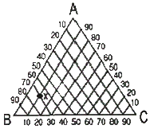
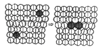
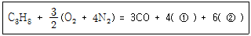

금속재료산업기사 (2009-08-30 기출문제)
1과목: 금속재료
1. 정방정계의 축 길이와 사이각을 옳게 나타낸 것은?
- a = b = c, α = β = γ = 90°
- a = b ≠ c, α = β = γ = 90°
- a ≠ b ≠ c, α = β = γ = 90°
- a = b ≠ c, α = β = 90°, γ = 120°
(정답률: 75%)

2. Ni-Cr계 합금에 대한 설명으로 틀린 것은?
- 전기저항이 대단히 작다.
- 내식성이 크고 산화도가 작다.
- Fe 및 Cu 에 대한 열전 효과가 크다.
- 내열성이 크고 고온에서 경도 및 강도의 저하가 작다.
(정답률: 74%)
3. 전자강판에 요구되는 특성을 설명한 것 중 옳은 것은?
- 철손이 클 것
- 자화에 의한 치수변화가 클 것
- 투자율 및 포화자속밀도가 낮을 것
- 박판을 적층하여 사용할 때 층간저항이 높을 것
(정답률: 61%)
4. 분말야금 의하여 제조된 소결베어링 합금으로 급유가 어려운 부분의 베어링으로 사용되며 마멸이 적은 합금은?
- 카드뮴계 베어링 합금
- 알루미늄계 베어링 합금
- 화이트메탈계 합금
- 오일리스 베어링 합금
(정답률: 83%)
5. Ni 60~70% 정도를 함유한 Ni-Cu계의 합금으로 내식성이 좋아 화학공업 등의 재료로 많이 사용되는 것은?
- 콘스탄탄
- 모넬메탈
- 니크롬
- Y합금
(정답률: 54%)
6. 다음 중 초소성 및 그 재료에 대한 설명으로 틀린 것은?
- 결정립의 형상은 등축(等軸)이어야 한다.
- Al 합금 중에는 Supral 100 이 초소성으로 많이 사용된다.
- 초소성재료의 입계구조에서 모상입계는 저경각(低傾角)인 것이 좋다.
- 초소성이란 어느 응력 하에서 파단에 이르기까지 수백% 이상의 연신을 나타내는 현상이다.
(정답률: 77%)
7. 다음 중 과공석강의 탄소함량은 약 몇 wt% 인가?
- 0.001 ~ 0.8
- 0.8 ~ 2.1
- 2.1 ~ 4.3
- 4.3 ~ 6.67
(정답률: 66%)
8. 균일한 고용체의 결정 내부에 다른 성분의 결정이 분리하여 생기는 현상은?
- 시효 현상
- 정출 현상
- 용체화처리 현상
- 적출 현상
(정답률: 39%)
9. 초경합금의 제조는 주성분인 WC 분말에 어떤 분말을 점결제로 사용하여 소결을 한 것인가?
- Fe
- Sn
- Co
- Cu
(정답률: 71%)
10. 주철에 나타나는 스테다이트(steadite) 조직의 3원 공정물이 아닌 것은?
- Fe
- MgS
- Fe3P
- Fe3C
(정답률: 63%)
11. 면심입방정(FCC)의 격자상수를 a 라 할때 원자 반지름(r)과 격자상수(a) 의 관계를 표시한 식으로 옳은 것은?
- r = (√2 / 2)a
- r = (√3 / 2)a
- r = (√2 / 4)a
- r = (√3 / 4)a
(정답률: 53%)
12. 금속의 냉간가공에 대한 설명으로 틀린 것은?
- 냉간가공 할수록 인장강도는 커진다.
- 냉간가공 할수록 연신율은 작아진다.
- 냉간가공한 금속은 방향성을 가지지 않으며, 비섬유 조직으로 된다.
- 냉간가공한 금속은 결정입자가 미세화되어 재료가 단단해진다.
(정답률: 70%)
13. Cu-Sn 의 평형상태도상에서 Sn 의 최대고용한도는 520℃에서 약 몇 % 정도인가?
- 11.0
- 13.5
- 15.8
- 24.6
(정답률: 38%)
14. 구상화처리에서 용탕의 방치 시간이 길어지면 흑연의 구상화 효과가 없어지는 현상을 무엇이라 하는가?
- 경년(secular) 현상
- 전 탄소(total carbon) 현상
- 페이딩(fading) 현상
- 전이(transition) 현상
(정답률: 79%)
15. 금속간 화합물(Fe3C)에서 C의 원자비는 몇 % 인가?
- 15
- 25
- 55
- 75
(정답률: 56%)
16. 다음 신소재합금 중 입자분산 강화금속의 표기로 옳은 것은?
- PSM
- FRM
- FRS
- HSLA
(정답률: 50%)
17. Fe-C 평형상태도에서 자기변태에 해당하는 것은?
- A1변태
- A2변태
- A3변태
- A4변태
(정답률: 77%)
18. 아연 합금 다이캐스팅 주물의 특성이 아닌 것은?
- 대량생산에 적합하다.
- 결정입자가 조대하고 강도가 작다.
- 복잡하고 얇은 주물이 가능하다.
- 치수가 정확하고 표면이 깨끗하다.
(정답률: 77%)
19. 다이(Die) 강보다 더 우수한 최고급 금형재료이나 고가이므로 소형물에 주로 사용하며 그 기호를 SKH로 사용하는 강은?
- 탄소공구강
- 합금공구강
- 고속도강
- 구상흑연주철
(정답률: 75%)
20. 다음 중 스테인리스강에 대한 설명으로 틀린 것은?
- Cr 계 스테인리스강에는 σ취성 등이 나타난다.
- 적출경화계의 대표적인 스테인리스강은 18%Cr-8%Ni이 있다.
- 스테인리스강에는 페라이트계, 오스테나이트계, 마텐자이트계 등이 있다.
- 오스테나이트ㆍ페라이트계의 2상을 가진 스테인리스강이 존재한다.
(정답률: 38%)
2과목: 금속조직
21. 규칙-불규칙 변태에서 전이온도(transition temperature)에 대한 설명으로 옳은 것은?
- 고온에서 불규칙 상태의 고용체를 서냉할 경우 규칙 격자가 형성되기 시작하는 온도
- 철 - 탄소 합금에서 자성을 상실하기 시작하는 온도
- 강을 급냉 할 때 결정이 조대화하기 시작하는 온도
- 저온에서 변태를 시작하는 온도
(정답률: 75%)
22. 금속의 강화기구 중 결정립의 크기와 강도와의 관계에 대한 설명으로 틀린 것은?
- 결정립의 크기가 클수록 강도는 증가한다.
- 결정입계의 면적이 클수록 강도는 증가한다.
- 재료의 항복강도와 결정립의 크기 관계를 Hall-Petch식이라 한다.
- 결정립이 미세할수록 항복강도 뿐만 아니라 피로강도 및 인성이 증가 된다.
(정답률: 54%)
23. 다음 중 고용체 강화에 대한 설명으로 틀린 것은?
- 고용체 강화 합금은 고온 크리프 저항성이 순금속보다 우수하다.
- 황동은 고용체 강화에 의해 강도 및 연성이 감소한다.
- 고용체 강화 합금은 순금속에 비해 전기전도도가 떨어진다.
- 고용체 강화 합금의 항복강도, 인장강도가 순금속 보다 크다.
(정답률: 66%)
24. Fe-C 평형상태도에서 공정정의 자유도는?
- 0
- 1
- 2
- 3
(정답률: 73%)
25. 공석강이 300℃ 부근의 등온변태에 의해 생성되는 조직으로 침상구조를 이루고 있는 것은?
- 레데뷰라이트
- 마텐자이트
- 하부 베이나이트
- 상부 베이나이트
(정답률: 61%)
26. 그림과 같은 3원 합금에서 x 점의 농도는 각각 몇 % 인가?

- A : 20%, B : 10%, C : 70%
- A : 20%, B : 70%, C : 10%
- A : 10%, B : 10%, C : 80%
- A : 10%, B : 80%, C : 20%
(정답률: 56%)
27. 결정 내 원자들은 열진동을 계속하면서 고체 내에 원자확산이 진행되고 있다. 다음 금속의 열진동에 대한 설명으로 틀린 것은?
- 원자의 열진동에서 진동수는 온도에 따라 거의 변하지 않으나 진폭은 변한다.
- 일반적으로 온도가 상승하면 공격자점이 존재하는 비율은 적어진다.
- 공격자점이 많아지면 결정 내의 원자 열진동 진폭은 커진다.
- 공격자점 주위의 열진동하고 있는 원자가 새로운 공격자점으로 계속 위치를 변화하며 확산이 진행된다.
(정답률: 54%)
28. 재결정에서 가공 전의 결정립이 미세하다면 재결정 완료후의 재결정 온도와 결정립은 어떻게 되는가?
- 재결정온도는 높아지고 결정입도는 커진다.
- 재결정온도는 낮아지고 결정입도는 작아진다.
- 재결정온도는 낮아지고 결정입도는 커진다.
- 재결정온도는 높아지고 결정입도는 작아진다.
(정답률: 42%)
29. 한 종류의 액상에서 고상과 다른 종류의 융액을 동시에 생성하는 반응은?
- 공정반응
- 포정반응
- 포석반응
- 편정반응
(정답률: 52%)
30. 전위와 용질원자사이의 상호작용으로 치환형용질 원자가 이동하여 나타난 그림에 대한 설명으로 옳은 것은?

- 칼날전위의 코어에 모인 치환형 용질원자이다.
- 나사전위의 코어에 모인 치환형 용질원자이다.
- 혼합전위의 코어에 모인 치환형 용질원자이다.
- 이온전위의 코어에 모인 치환형 용질원자이다.
(정답률: 66%)
31. 일정한 온도와 압력에서 일어나는 상변태에 있어 깁스의 자유에너지(G) 식으로 옳은 것은? (단, H는 엔탈피, T는 절대온도, S는 엔트로피)
- G = H - (T / S)
- G = H + (T / S)
- G = H - TS
- G = H + TS
(정답률: 52%)
32. 마텐자이트 변태에 대한 설명으로 틀린 것은?
- 냉각시 저탄소강은 래스(lath) 마텐자이트, 고탄소강은 판(plate) 마텐자이트가 생성된다.
- 오스테나이트에서 마텐자이트로 변태시 부피수축에 의해 표면에는 최종적으로 압축응력이 남는다.
- 비열적 마텐자이트의 경우 변태량은 온도에만 의존한다.
- 마텐자이트 변태는 순간적인 무확산 변태이다.
(정답률: 34%)
33. 다음 중 점결함에 해당되는 않는 것은?
- 공격자점
- 프렌켈결함
- 격자간원자
- 적층결함
(정답률: 59%)
34. 금속의 산화는 확산에 의해 지배되는 현상 중의 하나이다. 상온에서 금속이 공기나 수용액 중에서 산화하려는 경향을 설명한 것 중 옳은 것은?
- 공기나 수용액 중에서 산화물 상태의 자유에너지가 금속, 산소 각각의 자유에너지 합보다 낮기 때문이다.
- 공기나 수용액 중에서 산화물 상태의 자유에너지가 금속, 산소 각각의 자유에너지 합보다 높기 때문이다.
- 공기나 수용액 중에서 산화물 상태의 자유에너지가 금속, 산소 각각의 자유에너지 합과 같기 때문이다.
- 공기나 수용액 중에서 산화물 상태의 자유에너지가 금속, 산소 각각의 확산에너지 합과 같지 때문이다.
(정답률: 34%)
35. 조밀육방격자(HCP) 내의 원자의 충전율은 약몇 % 인가?
- 42
- 53
- 68
- 74
(정답률: 66%)
36. 다음 중 일반적으로 전영성이 적어 취약한 성질을 가지며, 가공하기 힘들고, Mg, Te 등의 결정격자는?
- 체심입방격자(bcc)
- 체심정방격자(bct)
- 면심입방격자(fcc)
- 조밀육방격자(hcp)
(정답률: 57%)
37. 고온의 오스테나이트 조직이 서냉 하면서 A1변태할때 오스테나이트 결정 입계로부터 시멘타이트의 핵이 생성하고 그것이 성장하는 주변에 페라이트가 생성되며 다시 그 옆에 시멘타이트가 생성하여 이러한 것들이 반복되는 기구(mechanism)에 의하여 나타나는 조직은?
- 마텐자이트
- 펄라이트
- 하드나이트
- 투루스타이트
(정답률: 48%)
38. 다음 중 장범위 규칙도가 1인 합금은?
- 완전 규칙 고용체이다.
- 완전 불규칙 고용체이다.
- 불완전 규칙 고용체이다.
- 불완전 불규칙 고용체이다.
(정답률: 54%)
39. 면심입방격자구조에서 슬립(slip)면과 방향의 조합으로 옳은 것은?
- (111)[110]
- (101)[010]
- (110)[111]
- (011)[110]
(정답률: 70%)
40. 전위의 운동에 의해 생기는 조그(jog)에 대한 설명으로 틀린 것은?
- 전위선이 상승하거나 서로 교차할 대에 생성된다.
- 두 슬립면의 경계에서 전위선이 게단상으로 된 부분이다.
- 결정의 변형 부분과 변형되지 않은 부분이 대칭을 이루고 있는 것이다.
- 전위선의 일부가 어느 슬립면에서 옆의 슬립면 위로 이동할 때 생성된다.
(정답률: 59%)
3과목: 금속열처리
41. 분위기 열처리 관리에 있어 노기 가스를 분석하는 장치가 아닌 것은?
- 열선 분석기
- 오르자트 분석기
- 노점 분석기
- 헐셀 분석기
(정답률: 56%)
42. 염욕열처리에서 염을 관리하기 위하여 실시하는 시험 방법은?
- 설퍼프린트 시험
- 강박 시험
- 조미니 시험
- 한쪽 끝 퀜칭 시험
(정답률: 50%)
43. 마레이지강의 시효(aging) 처리는 어떤 현상을 이용한 금속강화 방법인가?
- 석출강화
- 고용강화
- 분산강화
- 규칙-불규칙강화
(정답률: 61%)
44. A1 점 이하의 온도에서 처리하며, 인성을 부여하기 위한 열처리는?
- 풀림(annealing)
- 뜨임(tempering)
- 담금질(quenching)
- 노멀라이징(normalizing)
(정답률: 75%)
45. 고주파 담금질에서 물체의 표면만이 발열되는 이유로 옳은 것은?
- 질량효과와 전압효과 때문
- 와전효과와 역류효과 때문
- 표피효과와 근접효과 때문
- 침투효과와 저항효과 때문
(정답률: 59%)
46. 침탄 열처리 후 마이크로 조직 시험 방법으로 측정하여 유효 경화층의 깊이가 2.2mm 인 경우의 표시법으로 옳은 것은?
- CD - H - E 2.2
- CD- H - T 2.2
- CD - M - T 2.2
- CD- M - E 2.2
(정답률: 50%)
47. Ar′, Ar″의 중간 온도로 유지된 열욕 속에서 변태가 완료될 때까지 항온을 유지한 다음 공냉 시키면 베이나이트 조직이 생성되는 열처리 조작방법은?
- 워터 퀜칭(water quenching)
- 마퀜칭(marquenching)
- 마템퍼링(martempering)
- 오스템퍼링(austempering)
(정답률: 63%)
48. 흑심가단주철의 열처리 중 제1단 흑연화에서 일어나는 반응식으로 옳은 것은?
- CaCo3 → CO2 + CaO
- Fe3C → 3Fe + C
- C + O2 → CO2
- 3Fe + CO2 → Fe3C + O2
(정답률: 70%)
49. 다음 중 질화용강에 대한 설명으로 틀린 것은?
- A, Cr 이 함유된 강의 경우 강은 현저하게 강화된다.
- Mo 이 2% 함유된 강의 경우 중심 부분의 경도를 저하시키나, 담금질 취성을 억제하는 효과는 크다.
- Ti, V, Si 등은 안정한 질화물을 만들기 때문에 질화용강의 합금 원소로 적당하다.
- 일반적으로 순철, Ni강 등은 질화처리 하여도 경도가 향상되지 않는다.
(정답률: 39%)
50. 펄라이트 가단주철의 열처리방법 중 대량 생산에 널리 쓰이는 방법으로 제1단 흑연화가 종료한 직후 기름 담금질 또는 강제 공랭하고 이것을 650~700℃로 짧은 시간 템퍼링하여 목적하는 펄라이트조직이나 경도를 얻는 방법은?
- 합금 첨가에 의한 방법
- 열처리 곡선의 변화에 의한 방법
- 흑심가단주철의 재열처리에 의한 방법
- 백선의 유리시멘타이트의 흑연화 방법
(정답률: 23%)
51. 텅스텐계 고속도강의 열처리에 대한 설명으로 틀린 것은?
- 고속도강의 담금질 온도는 약 1250~1300℃의 고온이다.
- 담금질 온도가 높아지면 탄화물이 오스테나이트 중에 완전히 고용시켜 잔류 오스테나이트가 많아진다.
- 결정립의 조절, 조직의 개선 및 2차 경화를 위하여 노멀라이징 처리를 한다.
- 고속도강은 자경성이 강하므로 풀림시의 냉각 속도는 화색이 없어지기 전까지 서냉한다.
(정답률: 42%)
52. 다음은 변성로에서 프로판가스에 적정 공기를 혼합한 Rx gas를 제조할 때의 반응식이다. ( )안에 생성가스로 옳은 것은?

- ① H2 ② N2
- ① H2 ② CO2
- ① CO2 ② N2
- ① CO2 ② NH3
(정답률: 46%)
53. 금속을 열처리하는 목적에 대한 설명으로 틀린것은?
- 조직을 안정화시키기 위하여 실시한다.
- 내식성을 개선하기 위하여 실시한다.
- 조직을 조대화시키고 방향성을 크게 하기 위하여 실시한다.
- 경도의 증가 및 인성을 부여하기 위하여 실시한다.
(정답률: 69%)
54. 열처리 후처리 공정에서 제품에 부착된 기름을 제거하는 탈지에 적합하지 않은 방법은?
- 전해 세정
- 알칼리 세정
- 산 세정
- 트리클로로에틸렌 세정
(정답률: 72%)
55. Fe 와 N 을 질화 처리시 표면에서 형성되는 질화 층의 화학식으로 틀린 것은?
- Fe4N
- Fe3N
- Fe2N
- FeN
(정답률: 36%)
56. 담금질된 강의 경도를 증가시키고 시효 변형을 방지하기 위한 목적으로 0℃ 이하의 온도에서 처리하는 것은?
- 수인처리
- 조질처리
- 서브제로처리
- 오스포밍처리
(정답률: 74%)
57. 과공석강(1.5%)을 완전 풀림(full annealing) 하였을 때 나타나는 조직은?
- 페라이트 + 층상 펄라이트
- 층상 펄라이트 + 스텔라이트
- 시멘타이트 + 층상 펄라이트
- 시멘타이트 + 구상 펄라이트
(정답률: 60%)
58. 다음 중 탈탄의 방지대책으로 틀린 것은?
- 강의 표면에 도금을 하거나 탈탄방지제를 도포한다.
- 염욕 및 금속욕에 의한 가열을 한다.
- 중성분말제 속에서 또는 진공 가열을 한다.
- 고온에서 장시간 가열을 한다.
(정답률: 74%)
59. α - 황동을 냉간 가공하여 재결정 온도 이하로 열처리 하면 가공상태보다 경화한다. 이러한 처리와 관계 깊은 것은?
- 응력 제거 풀림처리이다.
- 저온 풀림 경화처리이다.
- 탈아연부식을 한 것이다.
- 고온탈아연처리 한 것이다.
(정답률: 62%)
60. 두 종류의 금속선 양단을 접합하고 양 접합점에 온도차를 부여하여 기전력을 이용한 온도계는?
- 복사 온도계
- 열전쌍온도계
- 광전온도계
- 광고온계
(정답률: 72%)
4과목: 재료시험
61. 금속의 탄성계수에 대한 설명으로 틀린 것은?
- 탄성계수는 재료 강성도의 척도이다.
- 탄성계수는 원자사이의 결합력에 의해서 결정된다.
- 탄성계수는 크면 클수록 주어진 응력에 의한 탄성변형률이 더욱 커진다.
- 응력-변형률 곡선에서 초기 직선 부근의 기울기를 탄성계수로 한다.
(정답률: 45%)
62. 금속재료의 결하검사에서 방사선을 이용한 비파괴 검사법의 약어로 옳은 것은?
- UT
- MT
- RT
- PT
(정답률: 58%)
63. 인장시험편의 표점거리가 200mm일 때 시험 후 절단된 표점거리는 250mm 이었다면 연신율은 몇 % 인가?
- 15
- 20
- 25
- 30
(정답률: 70%)
64. 금속재료의 인장시험편에서 시험편의 중앙부에서 동일단면을 갖는 부분의 명칭은?
- 평행부
- 물림부
- 표점거리
- 어깨부의 반지름
(정답률: 64%)
65. 침투탐상시험의 일부적인 시험 순서로 옳은?
- 전처리현상처리세정처리침투처리관찰
- 전처리세정처리침투처리관찰현상처리
- 전처리관찰현상처리침투처리세정처리
- 전처리침투처리세정처리현상처리관찰
(정답률: 61%)
66. 탄소강을 불꽃시험한 결과 불꽃파열의 숫자가 가장 많은 조성으로 옳은 것은?
- 0.⑤ ~ 0.1%C 강
- 0.3 ~ 0.4%C 강
- 0.6 ~ 0.8%C 강
- 0.9 ~ 1.2%C 강
(정답률: 63%)
67. 다음 재료 중 상온에서 크리프 현상이 나타나지 않으나 250℃ 이상에서 크리프 현상이 현저하게 나타나는 것은?
- Pb
- Cu
- 철강
- 순금속
(정답률: 44%)
68. 2개 이상의 물체가 접촉하면서 상대운동 할 때, 그 면이 감소되는 현상을 이용한 시험방법은?
- 마모(마멸)시험
- 크리프 시험
- 커핑 시험
- 에릭션 시험
(정답률: 70%)
69. 다음 표와 같은 조건일 때 평균입도 번호는? (문제 오류로 문제 및 보기내용이 정확하지 않습니다. 정확한 내용을 아시는분께서는 오류신고를 통하여 내용 작성 부탁드립니다. 정답은 2번입니다.)
- 6
- 6.5
- 7
- 7.5
(정답률: 62%)
70. 다음 중 초음파탐상시험으로 검출이 곤란한 결함은?
- 재료 내부에 라미네이션
- 재료 표면의 미세균열
- 재료 내부의 결함
- 용접이음 내부의 결함
(정답률: 62%)
71. 안전에 대한 관심과 이해가 인식되고 유지됨으로써 얻어지는 장점이 아닌 것은?
- 직장의 신뢰도를 높여 준다.
- 고유 기술의 축적으로 인하여 품질이 향상된다.
- 상하 동료 간에 인간관계가 개선되나 이직률이 증가한다.
- 고유기술이 축적되어 생산효율을 원활하게 해 준다.
(정답률: 76%)
72. 강재의 불꽃시험으로 알 수 있는 사항이 아닌것은?
- 이종 강재의 선별
- 내마모성 판정
- 담금질 여부 판정
- 탈탄, 침탄, 질화정도 판정
(정답률: 43%)
73. 충격 시험에 대한 설명으로 틀린 것은?
- 충격 시험은 재료의 연성과 취성의 정도를 판정하는 시험이다.
- 충격치란 충격 에너지를 시험편의 노치부 단면적으로 나눈 값으로 단위는 kgm/cm2 이다.
- 열처리한 재료의 평가를 위한 시험편은 열처리 전에 기계가공을 한다.
- 금속재료 충격시험편의 노치는 주로 V자형, U자형이 있다.
(정답률: 52%)
74. 매크로(macro) 조직검사는 몇 배 이내의 배율로 확대하여 시험 하는가?
- 10배
- 40배
- 100배
- 800배
(정답률: 71%)
75. 브리넬 경도 시험의 특징과 용도에 대한 설명으로 틀린 것은?
- 일반적으로 압입자의 압입시간은 약 10~15초이다.
- 시험편 윗면의 상태에 의한 측정치에 큰 오차는 발생하지 않는다.
- 얇은 재료나 침탄강, 질화강 등의 측정에 적합하다.
- 큰 압입자국을 얻기 때문에 불균일한 재료의 평균적인 경도값을 측정 할 수 있다.
(정답률: 44%)
76. 로크웰 경도시험에 대한 설명 중 틀린 것은?
- 압입자의 원추각은 120° 이다.
- HRB, HRC 등으로 표시한다.
- HRC 의 경우 시험하중은 100kgf 이다.
- 로크웰 경도계의 기준 하중은 10kgf 이다.
(정답률: 55%)
77. 다음 중 결정입도 측정법이 아닌 것은?
- ASTM 결정립 측정법
- 제프리즈(Jefferies)법
- 헤인(Heyn)법
- 풀링(Polling)법
(정답률: 57%)
78. 와전류 탐상시험에서 사용 되는 시험코일을 tgjacp에 대한 적용 방법에 따라 분류할 때 이에 해당되지 않는 것은?
- 매몰형 코일
- 내삽형 코일
- 과농형 코일
- 표면형 코일
(정답률: 39%)
79. 미국 ASTM에서 추천한 봉재의 압축시편 규격이 아닌 것은? (단, h : 높이 , d : 직경 이다.)
- 단주시험편 : h = 0.9d
- 관주시험펴 : h = 2d
- 중주시험편 : h = 3d
- 장주시험편 : h = 10d
(정답률: 62%)
80. 취성재료의 압축 시험시 가장 안전에 유의해야 하는 것은?
- 시험 재료의 파괴 비산
- 시험기 피스톤의 변형이나 파손
- 변위측정계의 제어 실수에 의한 과부하 및 고장
- 유압밸브의 막힘 및 파워 팩의 과열
(정답률: 59%)